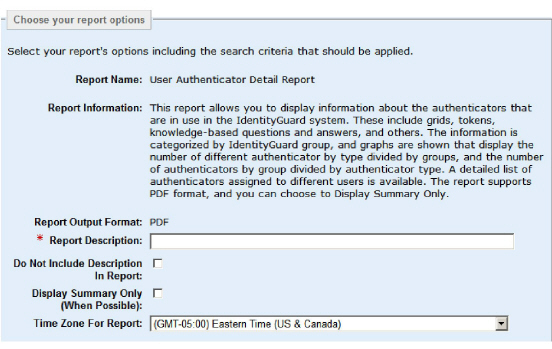
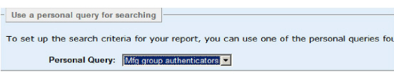

|
IdentityGuard Server 13.0 Administration Guide |
|
IdentityGuard Server 13.0 Administration Guide |
To generate a report from a saved report query
1. Log in to the Entrust IdentityGuard Administration interface as the administrator.
 On the
Windows computer where Entrust IdentityGuard is installed
On the
Windows computer where Entrust IdentityGuard is installed
2. Click Reports.
The Select a report screen appears, displaying the list of available reports.
The list each administrator sees may be different, depending on permissions. If you do not have permission to generate the report, it does not appear in the list.
In addition, some of the reports appear or not, depending on your repository settings:
● The audit reports appear only if you have enabled the Audits to Database feature. See Configure an audit database for more information.
● If you do not have a pre-produced card repository set up, you do not see the Unassigned Card report. This is often the case when you are using a replica LDAP directory-based installation.
● If do not have token repository set up, you do not see the Unassigned Token report. This is often the case when you are using a replica LDAP directory-based installation.

3. Select the report you want to run, and click Next.
The Choose your report options screen appears.
The top portion of the screen shows the general report options. It displays the name of the report you have chosen and the information message you configured in the Properties Editor (Report Definitions > Report Information), if specified.
It also displays the output format that be used for the report.

4. In Report Description, enter a text description of the report being generated. This is a required field.
5. If you would like to prevent the report description text from appearing in the report, select Do Not Include Description in Report.
6. If you would like to generate only the summary report, select Display Summary Only.
Note: Not all reports include a summary. If the report does not include a summary, the full report is generated.
7. In Time Zone For Report, select the applicable time zone from the drop-down list. The default is the time zone of the Entrust IdentityGuard server. Reports generated for your time zone use your current local time, adjusted for Daylight Savings Time (DST).
Note: The Time Zone For Report setting label does not reflect whether the time zone uses Daylight Savings Time (DST).
8. In Personal Query, you see the list of existing personal report queries. Select one for a starting set of search criteria for your report.
See Generate a report from a saved report query to set up your own personal report queries.

9. In the search criteria that follow, you can make additions to the search criteria included in the personal query you have selected.
10. Click Generate Report to launch a report using the personal query search criteria.